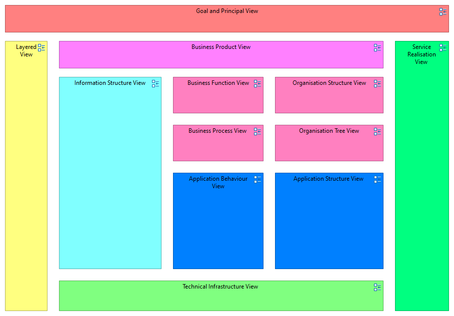

China Architecture Map
(
)

Map View with View References to all the other Views in the model
Goal and Principal View
Layered View
Business Product View
Information Structure View
Business Function View
Business Process View
Application Behaviour View
Organisation Structure View
Organisation Tree View
Application Structure View
Technical Infrastructure View
Service Realisation View